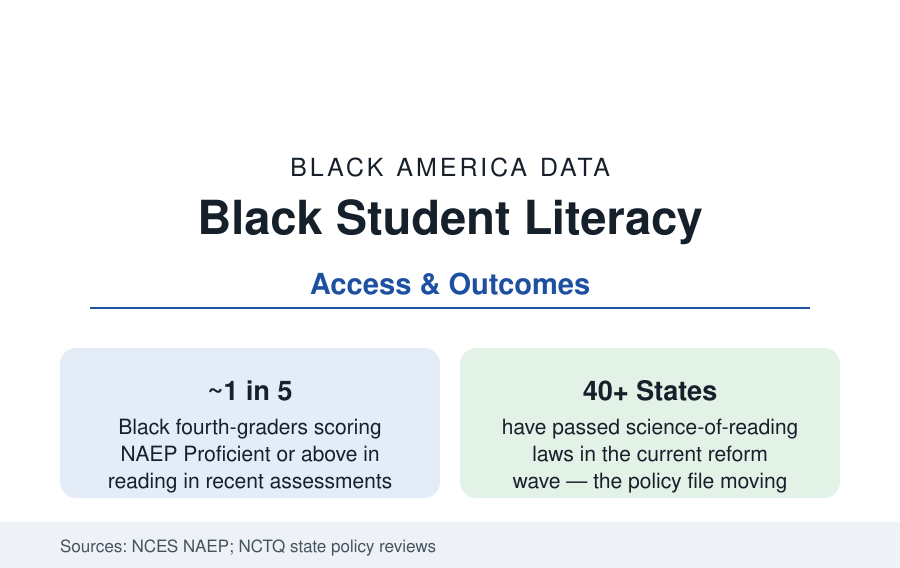

Black Education
Black Students and Reading: The Literacy Data From NAEP to the Science of Reading
Reading is where the achievement data begin — fourth-grade NAEP scores, the science-of-reading reforms, and the home literacy environment. The literacy file.

Every achievement table in the education section is downstream of reading: the child who cannot read by the middle grades meets every later subject through a locked door. The NAEP reading data place Black fourth-graders' proficiency in the range of one in five students — against roughly one in three overall — with the gap present at the first measurement and the science-of-reading reform wave now sweeping the states in response. This article reports the literacy file.
The NAEP Reading Series
The National Assessment's reading series is the K-12 file's longest honest line: Black students' average scores rose substantially from the 1970s to the 2000s (the long-term trend assessment's Black-white gap narrowing by a third or more at age nine across that span — one of American education's real achievements), stalled through the 2010s, and fell in the pandemic editions alongside everyone's, with the 2022 and 2024 main assessments recording the fourth-grade gaps at roughly twenty-five to thirty points and eighth-grade similar. The distribution matters more than the mean: the below-Basic share (fourth-grade Black readers in the range of two-fifths in recent editions) is the file's emergency statistic, and the advanced tail (Black students at NAEP Advanced in the low single digits) its excellence deficit — both tails set by the same early system the preschool profile described. The state map follows the now-familiar pattern with one famous exception: Mississippi — the poorest state, a majority of its fourth-graders of color — climbed the national reading table across the 2010s into the national average band, the 'Mississippi miracle' whose components (retention law, phonics mandate, teacher coaching, funded literacy coaches) the policy data now export.
The Science of Reading Reforms
The reform wave's content is specific: state laws (forty-plus states in the current count by the policy trackers) mandating evidence-based early reading instruction — systematic phonics within a structured-literacy frame, screening for reading risk in the first grades, intervention tiers, retention or intensive-support triggers at third grade, and the retraining of the elementary workforce away from the balanced-literacy materials the curriculum audits found dominant. The Black data stake in the wave is written in its geography: the South — where Black enrollment concentrates — has moved fastest and furthest (Mississippi, Alabama, Louisiana, Tennessee, North Carolina among the strong-law states), and the early outcome data (state assessment gains in the early-adopting Southern systems) are the file's live experiment. The debate's honest margins are recorded in the research: screening's false positives, retention's costs where support does not follow (the retention literature's warnings, weighed against Mississippi's support-funded model), and the upper-elementary comprehension file (knowledge-rich curriculum as the second act) where the reforms' evidence thins.
The Home Literacy Environment
The other half of the literacy file is measured in living rooms. The home-literacy research — books in the home, shared reading frequency, library use — documents the 'book desert' geography of the access studies (the famous finding of a few books per hundreds of children in poor neighborhoods' retail environments against hundreds per child in affluent ones), the public library's role as the counterweight institution (the library system's Black usage and its children's programming data), and the intervention literature's positive results: book-distribution programs (the Imagination Library's monthly books — its county-level evaluations show readiness effects), pediatric literacy programs (Reach Out and Read's exam-room prescriptions, evaluated in randomized designs), and the summer-reading experiments (self-selected book mailings cutting summer slide for low-income readers in the trial data). The oral-language foundation — vocabulary exposure in the first years, the ECLS's home measures — is where the income variables enter the reading data before school does.
Boys, Materials, and the Representation File
Two Black-specific literatures complete the profile. The gender file: Black boys' reading scores run below Black girls' at every NAEP grade — the widest within-group gender gap in the assessment — against a materials and engagement literature (the reading-interest surveys' finding of thin provision for boys' interests, the representation research counting Black boy protagonists in children's publishing in the low single digits of annual output in the Cooperative Children's Book Center series) that treats the gap as partly a supply failure. The representation data themselves have become a publishing file: children's books by and about Black creators run in the range of ten to fifteen percent of annual output in the CCBC counts (up from the single digits of the last decade), with the school and library acquisition data deciding what reaches the classroom shelf.
Reading the Literacy Data
Reading is the master skill and its data are the master file: a gap open by kindergarten, a reform wave built on the phonics evidence, a home environment measured in books per block, and a Southern state that proved the table can move. The literacy numbers are where the education section's hope and indictment are filed in the same drawer — because of all the gaps in this reference, this is the one the science knows most about closing.
More in Black Education
Black Educational Attainment: High School Parity, the College Gap
About 89 percent of Black adults hold a high school diploma and one in four holds a bachelor's degree or higher — the attainment ladder, the college completion gap, and the generational trend.
Historically Black Colleges and Universities: Enrollment and Degrees
More than 100 HBCUs enroll roughly 290,000 students and award about one in six Black bachelor's degrees — an outsized share from a small sector. The federal education data.
Black College Enrollment: 2.4 Million Students
About 2.4 million Black students are enrolled in American colleges — nearly two-thirds of them women. The NCES enrollment data by sector, level, and trend.
Source: National Center for Education Statistics, NAEP Reading assessments and Early Childhood Longitudinal Study; state literacy policy data (National Council on Teacher Quality); national reading research (National Reading Panel legacy studies).